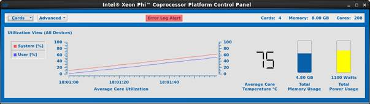

This section provides an overview of the Control Panel application. The Control Panel is the host-side user interface for system management purposes. As compared to a large scale cluster setup, the Control Panel is designed for and more practical in smaller setups, such as workstation environments. The Control Panel is responsible for:
· Monitoring Intel® Xeon Phi™ coprocessor status/parameters, power, thermal, etc.
· Monitoring system performance and key system parameters, including core utilization.
· Managing Intel® Xeon Phi™ coprocessor configurable settings.
4.1 Invocation and Command-Line Options
Once an MPSS installation is complete and operational, you can invoke the Control Panel’s graphical user interface (GUI) using the micsmc command with no arguments:
$ micsmc
The micsmc command also supports several command-line options that allow a user to access and control similar information and settings as the Control Panel GUI directly from the command line. You can view these options and their descriptions at any time using the following command:
$ micsmc -–help
These command-line options are also described in Section 6, later in this document.
The micsmc GUI application requires the MPSS stack to be installed and for the MPSS daemon (mpssd) to be started on Linux, or for the ‘micctrl --start’ command to be run successfully on Windows, before the Control Panel can fully initialize. When the micsmc GUI is launched, it will check if the prerequisites are met. If this is not the case, a dialog box will be shown that provides information about the detected failure. Once the OK button is clicked, the GUI application will exit to allow the user to rectify the problem. Figure 1 shows the dialog box with a “MIC device driver not loaded” error message. Other possible messages are: “MIC driver not initialized”, and “Failed to initialize API”, which also provides an API error code.
Figure 1: Control Panel Launch Failure
4.2 Menu Options and Navigation
The Control Panel GUI consists of a main application window frame, which includes a menu bar with the top-level menus: Cards and Advanced, in addition to an application window frame with standard icons in the upper-right corner of the window frame to minimize/maximize the window, and to exit the application. Throughout the menu choices and options described in this section, an underlined character in the option name (ex: Cards) indicates a keyboard shortcut. As with most graphical interfaces, the underline means that Alt-C, for the Cards menu example, yields the same result as clicking the Cards menu with the mouse. Please note that the Cards menu label will be Card, if there is only one card present in the host system.
4.2.1 The Card Menu
Clicking the Cards menu (or Alt-C) yields a menu with two sections and at least three choices. The first Cards menu section, which is above the divider, contains a list identifying the Intel® Xeon Phi™ coprocessors in the system, by ID: mic0, mic1, etc.; the content will vary with the number of cards available. The second Cards menu section, which is below the divider, contains two fixed choices: Show All and Hide All. Figure 2 illustrates the Cards menu.
_Xeon_Phi(TM)_Coprocessor_Platform_Control_Panel_User_Guide-EN_files/image002.jpg)
Figure 2: Control Panel with Card Menu
Selecting one of the card-number menu items in the upper Card menu section enlarges the application frame to display the Card Utilization View for the card selected. The card-number menu items act as toggles. The first click will display the Card Utilization View for the selected device – and a checkmark will appear next to the card-number menu item clicked. A second click will hide the Card Utilization View for that device. Figure 3 illustrates the Control Panel with one card view visible.
Figure 3: Control Panel with One Card View
More information on Control Panel Card Views, for which the default is the Card Utilization View, is available in Section 5.2 below.
The two items on the Card menu’s lower section are Show All and Hide All. They show or hide the Card Utilization View for all cards in the system. Please note that both Show All and Hide All have an underlined character indicating a keyboard shortcut is available. For example, Show All, can be accomplished by clicking the Card menu, then the Show All menu item, or by Alt-C-S (Alt-C, followed by Alt-S without releasing the Alt key).
4.2.2 The Advanced Menu
Clicking the Advanced menu (or ‘Alt-A’) yields a menu with five choices: Error Log, Settings, Update Application, Info, and About. Figure 4 shows the Control Panel’s Advanced menu, and the menu functions are described below.
Figure 4: Control Panel with Advanced Menu
· Error Log – This menu item displays the Error Log Analyzer dialog, which contains the content of the application error log. For more information on the Error Log Analyzer dialog, refer to Section 4.3 below.
· Settings – This menu item displays the Settings dialog, which contains the card configuration and connection settings, as well as log file management settings. This dialog is discussed in Section 4.4 below.
· Update Application – This menu item brings up the Intel Development website (http://software.intel.com/en-us/articles/intel-manycore-platform-software-stack-mpss), which requires authentication, in the default browser for the host system.
· Info – This menu item displays the Card Information dialog, which provides detailed information about the Intel® Xeon Phi™ coprocessors installed in the system. The Card Information dialog is described in Section 4.5 below.
· About – This menu item displays the About dialog window, which contains application version information. The About dialog is shown in Figure 5 below.
Figure 5: About Dialog
4.3 Error Log Analyzer Dialog
The Control Panel’s Error Log Analyzer dialog is shown in Figure 6 below. As described above, it is available through the Advanced menu.
The Error Log Analyzer dialog provides a message list which displays error log file content, several filter buttons to limit the type and severity of the messages being displayed, and additional buttons to clear the message list, refresh the list from the log file, and specify a different log file to display.
The message list can be scrolled horizontally or vertically, as necessary, when the displayed content exceeds the width or height of the available messages. The Error Log Analyzer dialog can also be resized to increase the message list area, in order to reduce or eliminate the need for scrolling.
The Close button, at the bottom-right of the dialog, kills the dialog and returns focus and control back to the Control Panel application.
4.3.1 Filter Buttons
Figure 6 highlights the checkboxes that can be used to filter the Message List contents: Information, Warning, Critical, Fatal, and RAS Filter, where each checkbox corresponds to a Control Panel error log severity level. The default is for all checkboxes to be checked, and all messages visible.
Figure 6: Error Log Analyzer Dialog
When you uncheck on one of the filter checkboxes, the message list is filtered to remove messages of that selected severity, and the button is highlighted to indicate that messages of that type are no longer being displayed. So, for example, if you uncheck the Information checkbox (or Alt-I), the message list will be filtered to remove all the Information messages.
Figure 7 shows the Error Log Analyzer dialog after it has been filtered to show no Information messages, which in this example leaves only Warning and Critical messages.
Figure 7: Filtered Error Log Analyzer Dialog
4.3.2 Reset Button
The Reset button simply resets (rechecks) all the filter checkboxes so that message list returns to displaying the entire error log content. In the above example, if you click on the Reset button, the Information checkbox will be re-selected (checked), and the Information messages, if any, will be added back to the message list.
4.3.3 Refresh Button
The Refresh button updates the displayed information by retrieving new entries from the active error log file. Like the Reset button, the Refresh button also clears any active filters by resetting the filter checkboxes, so that all messages from the log file are displayed.
4.3.4 Log File Browser
You can change the log file being viewed by entering a new log file path in the path field at the bottom of the dialog, or clicking on the Browse button to open a browser and selecting an existing log file.
4.4 Advanced Settings Dialog
The Control Panel’s Advanced Settings dialog is shown in Figure 8. As described above, it is available through the Advanced menu. The Advanced Settings dialog is divided into functional groups, with the additional Return button at the bottom-right of the dialog window. The groups are: Card Settings, Card Connections, and Log File.
Figure 8: Advanced Settings Dialog
4.4.1 Card Settings
The Card Settings group includes a grid of checkboxes that show the current settings for the cards and features listed and can be used to modify (enable or disable) the settings for all cards or for individual cards. The settings that can be enabled or disabled are: Turbo, ECC, LED, and the four Power States: p1, pc3, pc6 and co6. The Card Settings group also includes the Apply and Discard buttons, which are used to apply any selections changed by the user or to discard those changes and return to a display of current values.
In the Card Settings table are columns of checkboxes that are grouped according to the setting that they enable or disable. The first row of checkboxes, labeled “ALL”, enables or disables the corresponding setting for all cards in the system, and the remaining rows each enable or disable the settings for an individual card in the system.
4.4.1.1 Per-Card Settings
To enable a setting for a specific card, find the checkbox that is in the row for that card and the column for that setting, and click on that checkbox to enable the setting. The box will appear with a check mark when the setting is enabled. For example, in Figure 8, LED for card mic2 is enabled.
To disable a setting for a specific card, find the checkbox that is in the row for that card and the column for that setting, and click on the checkbox to disable the setting. The box will appear with no check mark (empty) when the setting is disabled. For example, in Figure 8, Turbo for card mic3 is disabled.
4.4.1.2 System-Level Settings
To enable a setting for all cards in the system, find the checkbox in the ALL row for that setting, and click on the checkbox to select it. The box will appear with a check mark when the setting is enabled. When the ALL checkbox is selected, the checkboxes in that column for all cards will also be selected. For example, in Figure 8, the Power State p1 is enabled for all cards in the system.
To disable a setting for all cards, find the checkbox in the ALL row for that setting, and click on the checkbox to unselect it. The box will appear with no check mark (empty) when the setting is disabled. When the ALL checkbox is unselected, the checkboxes in that column for all cards will also be unselected. For example, in Figure 8, the Power State pc3 is disabled for all cards in the system.
4.4.1.3 Applying the Settings
Within the Card Settings group, enabled and disabled settings are not actually applied to the cards until you click the Apply button. When you click the Apply button to apply your changes, you will be required to confirm those changes. Refer to Section 4.4.1.6 below for more information.
4.4.1.4 Discarding the Settings
Within the Card Settings group, you can discard your current changes (the ones made since the last time you clicked Apply) by clicking the Discard button. Doing so will restore the Card Setting table to reflect the current setting states of the cards in the system. You cannot recover these changes once discarded, so you will have to reselect the settings using the mouse pointer if you want to restore them.
4.4.1.5 Settings Availability
Certain settings are not available on all Intel® Xeon Phi™ coprocessor-based systems and, therefore, some checkboxes will be disabled and not selectable for use on those systems. Furthermore, the Turbo setting may also be dependent on the current Power State setting on certain systems. Additionally, you are required to be logged in as the root user in order to enable or disable any of the modes or power states supported by the Card Settings Group. If you are not the root user when running this application, then the application is in a read-only state, all checkboxes in the Card Settings group are disabled, and their selection state cannot be changed. In this case, the table will show the enabled/disabled states of the current system and per-card settings, but will not allow you to change them.
4.4.1.6 Change Confirmation
With any changes to the Card Settings, confirmation is required before the indicated changes are applied. There are two dialog forms used to accomplish this confirmation: one for ECC and Power State changes – which require card restart, and the other is used when Turbo or LED settings are changed – which do not require card restart.
4.4.1.6.1 ECC or Power State Settings Change Confirmation
ECC or Power State settings changes require that the affected cards be reset and rebooted before the changes take effect. When you change the settings for one or more cards and then click the Apply button, the Card Restart Apply Settings Confirmation dialog is displayed, as shown in Figure 9 below.
With this dialog, you must either click the OK button to apply the changes, or select Cancel to not apply the changes. If you choose Cancel, control will be returned to the Advanced Settings dialog. Your previous selections in the Card Settings group will remain unchanged.
Figure 9: Card Restart Apply Settings Confirmation Dialog
4.4.1.6.2 Turbo or LED Settings Change Confirmation
Settings changes for Turbo or LED do not require a card restart. When you change the settings for one or more cards and then click the Apply button, the No Restart Apply Settings Confirmation dialog is displayed, as shown in Figure 10 below.
With this dialog, you must either click the OK button to apply the changes, or select Cancel to not apply the changes. If you choose Cancel, control will be returned to the Advanced Settings dialog. Your previous selections in the Card Settings group will remain unchanged.
Figure 10: No Restart Apply Settings Confirmation Dialog
4.4.1.6.3 Mixed Mode Change Confirmations
When a combination of Turbo, ECC, LED, or Power State setting changes are selected, and the Apply button is clicked, the Card Restart Apply Settings dialog (see Figure 9) will always be used, because a change to ECC or Power State is indicated. Actions requiring confirmation for card restart will always take precedence over the No Restart Apply Settings Confirmation dialog. Regardless which confirmation dialog is displayed, clicking OK will apply all changes selected.
4.4.1.6.4 Process Monitor
When card restart is required, the Process Monitor dialog is provided to inform you of card restart progress, which includes card reset and boot. This means a Process Monitor dialog will always appear after clicking the OK button of the Card Restart Apply Settings Confirmation dialog.
There are two versions of the Process Monitor dialog: a Linux version (see Figure 11) and a Windows version (see Figure 12). The Process Monitor dialog is intended for user information only. Once the process is complete the Process Monitor dialog will close automatically. The Process Monitor dialog does not require user interaction to close, but an OK button is provided for convenience. The OK button closes the Process Monitor dialog, but the reset/reboot process will still continue to completion.
Figure 11: Linux Process Monitor Dialog
Figure 12: Windows Process Monitor Dialog
4.4.1.7 ECC Changes
If the ECC setting has changed for one or more cards, then clicking the OK button of the Card Restart Apply Settings Confirmation dialog (see Figure 9) initiates the next series of events: each affected Intel® Xeon Phi™ coprocessor is placed in Maintenance Mode, the ECC change is applied to the card, and then the card is booted when the mode change has been completed. If the requested mode changes complete successfully, the checkboxes will be updated to indicate the new enabled/disabled state of the ECC settings. Otherwise, if errors occur during the mode-change operation, an Error dialog will appear, detailing the error condition.
All errors will also be written to the Control Panel Error Log and viewable through the Error Log Analyzer dialog, as described in Section 4.3 above. If an error does occur, it may be necessary to restart your Intel® Xeon Phi™ coprocessors, restart the Control Panel application, and/or restart the host system to return to normal operation.
4.4.1.8 Power State Changes
As with ECC settings, there are checkboxes to enable or disable the various Power States supported by the cards. These include P State (p1), Package State C3 (pc3), Package State C6 (pc6), and Core State C6 (co6). When enabled, these Power States affect how power is managed on each indicated Intel® Xeon Phi™ coprocessor.
When you click on the Apply button to apply the Power State changes, the Card Restart Apply Settings Confirmation dialog (see Figure 9) is displayed to confirm the changes. As with ECC changes, click the OK button to apply the Power State changes and restart affected cards, or click the Cancel button to return to the Advanced Settings dialog without applying the changes.
Once the OK button is clicked on this dialog, the affected cards in the system will be reconfigured and rebooted with the new Power State settings. Please refer to Section 4.4.1.5 for information on the availability of Power State settings changes.
4.4.1.9 Turbo Changes
As with the other card settings, there are checkboxes to enable or disable Turbo. However, not all cards support Turbo. If the application encounters a card that does not support the requested mode, the corresponding Turbo checkbox will be disabled and will not be selectable. In addition, if a card nominally supports the Turbo feature but the current Power State does not support Turbo, then the Turbo checkbox will also be disabled.
If Turbo is supported, as with the other card settings, there are checkboxes to enable or disable Turbo. When you click on the Apply button to apply the Turbo changes, the No Restart Apply Settings Confirmation dialog (see Figure 10) is displayed to confirm the changes. Click the OK button to apply the Turbo changes or click the Cancel button to return to the Advanced Settings dialog without applying the changes.
Unlike ECC and Power State changes, Turbo changes do not require card restart.
4.4.1.10 LED Changes
As with the other card settings, there are checkboxes to enable or disable LED. When you click on the Apply button to apply the LED changes, the No Restart Apply Settings Confirmation dialog (see Figure 10) is displayed to confirm the changes. Click the OK button to apply the LED changes or click the Cancel button to return to the Advanced Settings dialog without applying the changes.
Each Intel® Xeon Phi™ coprocessor for which the LED setting (LED Alert Mode) is enabled will be highlighted with two LED blinks every two seconds. With this mode, you can select cards in the Control Panel and use the blinking LED mode to visually identify the corresponding physical card in the system.
Unlike ECC and Power State changes, LED changes do not require card restart.
Figure 13: Card Connection Failures
4.4.2 Card Connections
The Card Connections group contain a buttons for each Intel® Xeon Phi™ coprocessor found on the system, plus the Reconnect All Cards and the Restart All Cards buttons. Each Card button is labeled “micN”, where ‘N’ is replaced with the card number (0-N).
The Card buttons change color depending on the state of the corresponding card: green if the card is online and red if the card is offline, restarting, or otherwise unavailable. Figure 8 shows the Advanced Settings dialog for a system where all eight cards are available and responsive, so all the card buttons are green. Figure 13 shows the Card Connections group with two connection failures, both of which are red.
4.4.2.1 Auto-Reconnect
The Control Panel application supports automatic reconnection to cards that have been become disconnected from the application due to card failure, card reset, or card reboot. When a card returns to an online state, the application will automatically reconnect to the card, returning the corresponding Card button to green, and will then continue monitoring card data as usual.
4.4.2.2 Manual Reconnect
On rare occasions, the application may not be able to successfully reconnect to a card once it has rebooted and is online. In this case, clicking the Card button will trigger a manual reconnect of the Control Panel to the associated Intel® Xeon Phi™ coprocessor. Clicking on the Reconnect All Cards button will attempt to reconnect the application to all Intel® Xeon Phi™ coprocessors in the system.
4.4.2.3 Restart All Cards
Clicking the Restart All Cards button will trigger a manual restart for all Intel® Xeon Phi™ coprocessors in the system and, therefore, requires root privileges. In this case, before restarting, the application will display a Restart All Cards Confirmation dialog, shown in Figure 14. Click the OK button to continue with the restart, or the Cancel button to cancel it. If you do not have root privileges on the system, you can request that a root user restart the cards, and then wait for the Control Panel application to automatically reconnect to the Intel® Xeon Phi™ coprocessors in the system. If the Control Panel application does not reconnect automatically, once the cards are online, clicking the Reconnect All Cards button may restore the connections between the application and the Intel® Xeon Phi™ coprocessors in the system.
_Xeon_Phi(TM)_Coprocessor_Platform_Control_Panel_User_Guide-EN_files/image014.png)
Figure 14: Restart All Cards Dialog
4.4.3 Log File
The Log File group contains the Rotation Schedule drop-down menu and the Rotate With Timestamp button. The Rotation Schedule drop-down menu provides options to select how frequently the log file will rotate. The options are: Daily, Weekly, Monthly, and Do Not Rotate. The Rotate With Timestamp button will immediately rotate the current log file with a current timestamp. Click the Browse button to open a file system browser and select an existing log file.
4.4.4 Closing the Advanced Settings Dialog
The Return button, at the bottom-right of the dialog, closes the dialog and returns focus and control back to the Control Panel application.
4.5 The Card Information Dialog
The Card Information dialog is available through the Advanced menu. An example of the Card Information dialog is shown in Figure 15.
Figure 15: The Card Information Dialog
This example shows the Card Information dialog with two cards. The dialog shows the following information about each card installed in the system:
· Device Series – Intel® Xeon Phi™ coprocessor x100 family
· Device ID – the device identifier for the card
· Stepping – the ‘Stepping’ value for the card
· Substepping – the ‘Substepping’ value for the card
· Coprocessor OS Version – the coprocessor OS version on the card
· Flash Version – the Flash version number
· Host Driver Version – the Host Driver name and version number
The Card Information dialog, like the Settings dialog, is modeless, which means it stays open without blocking interactions with the main application window and therefore can be displayed while you continue to interact with the Control Panel. You can close the dialog at any time by clicking on the Return button at the bottom right of the dialog, or the dialog will be closed automatically when you close the Control Panel application.
The text fields in the Card Information dialog can be selected individually, and the text can be copied and pasted into other windows using the standard copy and paste shortcuts for your system (typically Ctrl-C and Ctrl-V). You can also select multiple fields in the dialog, but Copy and Paste will only work with the last text field selected in the group.
4.6 The Error Log Alert Button
The Error Log Alert button indicates a “Critical” or “Fatal” error has been encountered by the application and the associated error message was written to the Error Log Analyzer dialog (see Section 4.3 for more information). The Error Log Alert button is hidden by default, but when an error is encountered and the Error Log Analyzer content is updated with the error message, the Error Log Alert button will appear in the application’s menu bar, and will flash red until you click on the button to open the Error Log Analyzer dialog. This indicator will not appear if the Error Log Analyzer dialog is already open / displayed.
Once you display the Error Log Analyzer dialog, the Error Log Alert button will be removed from the menu bar, until a new error of sufficient severity is encountered. You can also use the Advanced→Error Log menu entry to display the Error Log Analyzer dialog, which will also remove the Error Log Alert button if present. Figure 16 show the Error Log Alert button, highlighted in red.
Figure 16: The Error Log Alert Button
4.7 The Lost Card Alert Button
The Lost Card Alert button is used to indicate when the Control Panel has lost connection with one or more Intel® Xeon Phi™ coprocessors in the system. The Lost Card Alert button is hidden by default, but will appear in the application’s menu bar when a card connection loss is detected, and will flash red until you click on the button to open the Advanced Settings dialog. This indicator will not appear if the Advanced Settings dialog is already open / displayed.
You can also use the Advanced→Settings menu entry to display the Advanced Settings dialog, which will also remove the Lost Card Alert button if present. Figure 17 shows the Lost Card Alert button, highlighted in red.
Figure 17: The Lost Card Alert Button
The Advanced Settings dialog includes buttons to restore the lost-card connections, once the underlying connection issue has been addressed (e.g., the cards have been restarted). For more information on the Advanced Settings dialog and restoring lost connections, refer to Section 4.4.
If Lost Node is enabled on the host system/node via sysfs on Linux platforms and WMI on Windows platforms, and the “auto-reboot” system configuration parameter is enabled, then the Intel® Xeon Phi™ coprocessor will reboot itself, and will be automatically reconnected by the Control Panel with no user intervention required. The settings noted in this paragraph are the default settings for an MPSS installation.
4.8 The “Device Connection Lost” Message
In addition to displaying the Lost Card Alert button when a card connection fails, the Control Panel also highlights the individual card views with a message to indicate that the card connection has been lost. The message “[Device Connection Lost!]” appears at the top-center of the corresponding Card View. Figure 18 shows an example Card View with the “Device Connection Lost” message. Card Views are discussed in more detail in Section 5.2. For more information on restoring lost card connections, refer to Section 4.4.
Figure 18: The Lost Card (“Device Connection Lost”) Message
4.9 The Summary Fields
The Summary Fields are the informational fields at the right side of the application’s menu bar, which list summary information about the Intel® Xeon Phi™ coprocessors in the system:
· Cards – this field lists the number of Intel® Xeon Phi™ coprocessors installed in the system.
· Memory – this field shows the maximum available memory for all cards in the system.
· Cores – this field lists the number of processor cores available through all the Intel® Xeon Phi™ coprocessors installed on the system.
Figure 19 shows the Summary area of the application window, highlighted with a red rectangle.
Figure 19: The Summary Fields
Within the Control Panel application window two primary views of the system are available, each of which described in detail later in this section. The two primary views are:
1. Average Utilization View – this is a single view that provides a top-level or at-a-glance view of the system.
2. Card Views – there are three card views for each Intel® Xeon Phi™ coprocessor in the system:
a. Card Utilization View – shows the current Core Utilization, Temperature, Memory Usage, and Power Usage for the card. This is the default view when a Card View is first opened.
b. Core Histogram View – contains a histogram chart showing the separate utilization of each core in the card.
c. Historical Utilization View – graphs the historical data for Core Utilization, Temperature, Memory Usage, and Power Usage for the card.
5.1 Average Utilization View
Shown in Figure 20 below, the Average Utilization View is the default view presented by the Control Panel application on startup and is the primary Control Panel view for graphical visualization of Intel® Xeon Phi™ coprocessor overall system status. The performance parameters monitored by the four (4) GUI components are listed below. Each component is discussed in the following sections, including the parameters monitored.
1. Average Core Utilization
2. Average Temperature
3. Total Memory Usage
4. Total Power Usage
Figure 20: Average Utilization View
5.1.1 Average Core Utilization
The Average Core Utilization field is identified in Figure 21 below by the red rectangle surrounding it.
The Average Core Utilization graph displays the average utilization of all operationally active cores in a system/node. The computational activity shown, measured in percentage utilization, is calculated by averaging the current utilization of each core on each Intel® Xeon Phi™ coprocessor in the system. The blue trace shows User CPU utilization and the red trace tracks System CPU utilization.
The two buttons on the left of the graph, labeled “System [%] and “User [%]” are each color-coded to match the trace they control. Clicking on either button will take the button out of the detent position and will turn off the associated graph trace.
The valid range for the Average Core Utilization is from 0% to 100%. The current CPU activity appears on the right-most edge of the graph, and historical values scrolling to the left, with up to one full minute (60 seconds) of activity being shown at any given time.
_Xeon_Phi(TM)_Coprocessor_Platform_Control_Panel_User_Guide-EN_files/image021.jpg)
Figure 21: Average Core Utilization
5.1.2 Average Core Temperature
The Average Core Temperature field is identified in Figure 22 below by the red rectangle surrounding it. The Average Core Temperature field displays the average core/silicon temperature of all Intel® Xeon Phi™ coprocessors in a system/node, in degrees Centigrade. The digital LED style widget clearly indicates the current average value at-a-glance. The valid range for Average Core Temperature is from 0 to 150 degrees Centigrade.
-
Figure 22: Average Core Temperature
In addition, specific events are triggered when any installed Intel® Xeon Phi™ coprocessor approaches and/or breaches temperature limits. The associated limits and the visual alert indicators provided are discussed in the following section.
5.1.2.1 Average Core Temperature Limit Alert Indicators
As shown in Figure 23 below, the Average Utilization View indicates Temperature Limit Alerts by changing the color of the temperature numbers. In the example, a Warning Alert Indicator (the yellow text color) is shown.
Three levels of Processor Core Temperature Limit Alert Indicators are currently supported and they are discussed in detail in Section 5.2.1.2.1 below as they are relevant to a specific coprocessor. The important thing to note here is that the Average Utilization View Processor Core Temperature Limit Alert Indicator reflects the highest level temperature alert of all installed coprocessors. This allows a user to note that a temperature limit has been exceeded by at least one of the coprocessors being monitored, even if the Card Utilization View for that coprocessor is hidden (not shown) or is below the visible part of the application window frame.
Figure 23: Average Core Temperature Limit Indicator
5.1.3 Total Memory Usage
The Total Memory Usage field is identified in Figure 24 below by the red rectangle surrounding it. In the figure, the current value for Total Memory Usage value is 1.228 gigabytes, and is shown both as a numeric value and in a bar-graph format. The value shown is the continuously calculated total (sum) of the memory usage reported by all Intel® Xeon Phi™ coprocessors in a system/node. The valid range for Total Memory Usage is from 0 to the cumulative amount of physical memory installed on all Intel® Xeon Phi™ coprocessors in the system.
Figure 24: Total Memory Usage
5.1.4 Total Power Usage
The Total Power Usage field is identified in Figure 25 below by the red rectangle surrounding it. In the figure, the current value for Total Power Usage is 670 Watts in this progress-bar-style GUI component. The value shown is the continuously calculated total (sum) of the Power usage reported by all Intel® Xeon Phi™ coprocessors in a system/node. The valid range for Total Power Usage is from 0 to the mathematical sum of the maximum amount of power usage possible for on all Intel® Xeon Phi™ coprocessors in the system.
Figure 25: Total Power Usage
In addition, specific events are triggered when any installed Intel® Xeon Phi™ coprocessor approaches and/or breaches power limits. The associated limits and the visual alert indicators provided are discussed in the following section.
5.1.4.1 Total Power Usage Limit Alert Indicators
As shown in Figure 26 below, the Average Utilization View indicates Power Usage Limit Alerts by overlaying the appropriate alert color over the Total Power Usage bar-graph. In the example, a Warning Alert Indicator (the yellow text color) is shown.
Three levels of Processor Core Temperature Limit Alert Indicators are currently supported and they are discussed in detail in Section 5.2.1.4.1 below as they are relevant to a specific coprocessor. The important thing to note here is that the Average Utilization View Total Power Limit Alert Indicator reflects the highest level power usage alert of all installed coprocessors. This allows a user to note that a power usage limit has been exceeded by at least one of the coprocessors being monitored, even if the Card Utilization View for that coprocessor is hidden (not shown) or is below the visible part of the application window frame.

Figure 26: Total Power Usage Limit Alert Indicator
5.2 Card Views
As noted above, the Average Utilization View provides an overall view of Intel® Xeon Phi™ coprocessor Platform Status. Performance and status indicators for each Intel® Xeon Phi™ coprocessor are monitored and displayed by the Control Panel’s Card Views, which can be independently selected for each card in the system. The Card Views discussed in this section are:
1. Utilization View
2. Core Histogram View
3. Historical Utilization View
Figure 27 below shows the Control Panel with two Intel® Xeon Phi™ coprocessors and with both Card Views enabled for view through the application’s Card pull-down menu, as described in Section 4.1 above. By default, each card’s Utilization View is displayed.
Figure 27: Intel® Xeon Phi™ coprocessor Card Views
Figure 28 below highlights the Card View title, with a red rectangle surrounding it. The title shows both the number of the card being viewed, and the type of card view that is being displayed – Utilization, Core Histogram, or, as in these examples, Historical Utilization.
Figure 29 highlights the Card View Navigation buttons that are used to navigate between the Card Views.
The view-selection buttons enable you to switch from the current view to one of the two other available views. So, for example, if the current view is the Utilization View, then the available buttons will allow you to switch to either the Core Histogram View or the Historical Utilization View.
Figure 28: Card View Title
Figure 29: Card View Navigation Buttons
5.2.1 Card Utilization View
The Card Utilization View is identified by the “Card n: Utilization View” title in the upper-left corner. Visually and functionally, it is almost identical to the Average Utilization View described in Section 5.1 above. The minor visual differences consist of the labels associated with the data presentation fields, which indicate the functional differences as well.
The Card Utilization View displays the core utilization, processor core temperature, memory usage, and power usage reported by a single Intel® Xeon Phi™ coprocessor. Figure 30 shows an example Card Utilization View.
_Xeon_Phi(TM)_Coprocessor_Platform_Control_Panel_User_Guide-EN_files/image030.jpg)
Figure 30: Card Utilization View
5.2.1.1 Core Utilization
Similar to the Average Utilization View discussed in Section 5.1 above, the first field in the Card Utilization View is Core Utilization, which is highlighted by the red rectangle in Figure 31 below.
The Core Utilization graph displays the utilization of all operationally active cores on a single Intel® Xeon Phi™ coprocessor, and the computational activity shown is measured in percentage utilization. The blue trace shows User CPU utilization and the red trace tracks System CPU utilization.
Also similar to the Average Utilization View discussed in Section 5.1 above, the two buttons on the left of the graph, labeled “System [%] and “User [%]” are each color-coded to match the trace they control. Clicking on either button will take the button out of the detent position and will turn off the associated graph trace.
The valid range for Core Utilization is from 0% to 100% with current CPU activity appearing on right-most edge of the graph, and historical values scrolling to the left, with up to one full minute (60 seconds) of activity being shown at any given time.
Figure 31: Core Utilization Field
5.2.1.2 Processor Core Temperature
Similar to the Average Utilization View discussed in Section 5.1 above, the second field in the Card Utilization View is the Processor Core Temperature field, which is identified in Figure 32 below by the red rectangle surrounding it. The Processor Core Temperature field displays the current core temperature of the single Intel® Xeon Phi™ coprocessor being viewed, in degrees Celsius. The digital LED style widget clearly indicates the current average value at-a-glance. The valid range for Processor Core Temperature is from 0 to 150 degrees Celsius.
Figure 32: Processor Core Temperature
In addition, specific events are triggered when an Intel® Xeon Phi™ coprocessor approaches and/or breaches temperature limits. The associated limits and the visual alert indicators provided are discussed in the following section.
5.2.1.2.1 Processor Core Temperature Limit Alert Indicators
As shown in Figure 33 below, the Card Utilization View indicates Temperature Limit Alerts by changing the color of the temperature numbers. In the example, a Warning Alert Indicator (the yellow text color) is shown.
Three levels of Processor Core Temperature Limit Alert Indicators are currently supported:
1. Warning: resulting in a yellow overlay
2. Caution: resulting in an orange overlay
3. Critical: resulting in a red overlay
Intel® Xeon Phi™ coprocessors have three Temperature Limits, as well as active Temperature Management. If an Intel® Xeon Phi™ coprocessor breaches the final limit, it indicates the device is approaching the trigger for Thermal Shutdown. The Intel® Xeon Phi™ coprocessor Temperature Limits are:
1. Lower Processor Core Temperature Limit:
a. Triggers Temperature Limit Warning (yellow) Alert.
2. High Processor Core Temperature Limit:
a. Triggers Temperature Limit Caution (orange) Alert.
3. Fatal Limit:
a. Triggers Power Limit Critical (red) Alert Indicator and indicates the device is approaching Processor Core Thermal Shutdown and is in danger of breaching that threshold and triggering device shutdown.
b. The Critical Alert Indicator becomes visible when Power Usage is within 10% of the Shutdown Limit to provide notice of imminent shutdown.
Figure 33: Processor Core Temperature Limit Indicator
5.2.1.3 Memory Usage
Similar to the Average Utilization View discussed in Section 5.1 above, the third field in the Card Utilization View is the Memory Usage field, which is identified in Figure 34 below by the red rectangle surrounding it.
In the figure, the current value for Memory Usage is 209.6 megabytes in this progress-bar-style UI component. The Memory Usage field provides a dynamic display of the current memory usage as reported by the single Intel® Xeon Phi™ coprocessor being viewed, in megabytes (MB).
Please note that this is the only case where the unit of measurement reported is different between the Average Utilization View, which is reported in gigabytes (GB) and the Card Utilization View, which reports in megabytes (MB).
Valid range for the Memory Usage widget is from 0 to the amount of physical memory installed on the single Intel® Xeon Phi™ coprocessor being viewed.
Figure 34: Memory Usage
5.2.1.4 Power Usage
Similar to the Average Utilization View discussed in Section 5.1 above, the fourth field in the Card Utilization View is the Power Usage field, which is identified in Figure 35 below by the red rectangle surrounding it.
In the figure, the current value for Power Usage is 105 Watts in this progress-bar-style GUI component. The Power Usage field provides a dynamic display of current power usage as reported by the single Intel® Xeon Phi™ coprocessor being viewed, in Watts.
The valid range for the Power Usage field is from 0 to 350 Watts.
In addition, specific events are triggered when an Intel® Xeon Phi™ coprocessor approaches and/or breaches power limits. The associated limits and the visual alert indicators provided are discussed in the following section.
Figure 35: Power Usage
5.2.1.4.1 Power Usage Limit Alert Indicators
As shown in Figure 36 below, the Card Utilization View indicates Power Usage Limit Alerts by overlaying the appropriate alert color over the Power Usage bar-graph. In the example, a Warning Alert Indicator (the yellow overlay color) is shown.
Three levels of Power Usage Limit Alert Indicators are currently supported:
1. Warning: resulting in a yellow overlay
2. Caution: resulting in an orange overlay
3. Critical: resulting in a red overlay
Intel® Xeon Phi™ coprocessors have three Power Limits, as well as active Power Management. Each limit, if breached, triggers Power Management events on the device, as well as a Power Limit Alert Indicator on the Power Usage field of the Card Utilization View:
1. Lower Limit:
a. Triggers Power Limit Warning (yellow) Alert Indicator and Fan Speed Increase (via Power Management).
2. High Limit:
a. Triggers Power Limit Caution (orange) Alert Indicator and Active Power Management, which may include:
i. Throttling processor activity.
ii. Fans at maximum.
3. Shutdown Limit:
a. Triggers Power Limit Critical (red) Alert Indicator and device shutdown.
b. The Critical Alert Indicator becomes visible when Power Usage is within 5% of the Shutdown Limit to provide notice of imminent shutdown.
Figure 36: Power Usage Limit Alert Indicator
5.2.2 Core Histogram View
The second Card View, the Core Histogram View is displayed when a user clicks on the “Core Histogram View” button in the current Card Utilization View. The Core Histogram View presents a histogram view of current User and System CPU usage for each active core on the associated Intel® Xeon Phi™ coprocessor.
The Core Histogram View is shown in Figure 37 below. The view contains a histogram view of per-core CPU usage for a specific Intel® Xeon Phi™ coprocessor, where a red and/or blue bar is shown for each active core on the selected card. Consistent with other core utilization views, blue is used to show User utilization and red for System. When a core has both User and System utilization, the two bars are overlaid, with the blue User utilization on top.
In addition, the two legend labels on the left side of the view are clickable. In the example below, both System and User have been selected, and therefore both values are displayed. This feature allows the user to select only system usage, only user core usage, or both (as shown).
Figure 37: Core Histogram View
5.2.3 Historical Utilization View
The third Card View, the Historical Utilization View is displayed when a user clicks on the “Historical Utilization View” button in the current Card Utilization View. The Historical Utilization View presents a continuous graph view of Utilization, Temperature, Memory, and Power values for the associated Intel® Xeon Phi™ coprocessor.
The Historical Utilization View is shown in Figure 38 below. The view contains a single graph with four differently colored traces and four associated legend buttons. Intuitively, each legend consists of a label indicating the data source for each trace used in the graph. As with the Core Histogram View, discussed in the previous section, each legend is also a button that can be used to enable or disable the associated data from being drawn on the graph. As shown, all four legends are in their selected (detent) position and, accordingly, all four traces are visible and active.
Valid ranges for the Historical Utilization View are consistent with the four data sources:
· Utilization – this is measured in percentage used and is measured by the 0 – 100 scale on the left side of the graph.
· Temperature – is measured in degrees Celsius and is also measured by the 0 – 400 °C scale on the right side of the graph.
· Memory – is also measured in percentage used by the 0 – 100 scale on the left side of the graph.
· Power – is measured in Watts and is measured by the 0 – 400 Watts scale on the right side of the graph.
All data sources are continuously reported, with activity appearing on right-most edge of the graph and historical values scrolling to the left, with up to one full minute (60 seconds) of activity being shown at any given time.
Figure 38: Historical Utilization View
5.2.4 Mixed Views
As described in Section 4.2.1, you can show Card Views for one or more cards on your system using the Cards pull-down menu. Additionally, as shown in Figure 29 of Section 5.2, you can switch to different Card View types using the Card View Navigation buttons. Since these buttons are located on every card view, you can have different card view types for the different cards on your system showing at the same time.
Figure 39 shows an example Control Panel application with the Core Histogram View for mic3, and the Historical Utilization View for mic5.
_Xeon_Phi(TM)_Coprocessor_Platform_Control_Panel_User_Guide-EN_files/image039.jpg)
Figure 39: Mixed Card View Types
The Intel® Xeon Phi™ Coprocessor Platform Control Panel also supports a command-line interface (CLI) that provides similar information as the graphical user interface (GUI), but in text form, and is suitable for direct execution or for scripting. The usage information for the CLI is provided in Figure 40, Figure 41, and Figure 42 below, which represent the output of the ‘micsmc -h’ (short-form) or ‘micsmc --help’ (long-form) CLI options.
![Intel(R) Xeon Phi(TM) Coprocessor Platform Control Panel
VERSION: 3.6
Copyright (c) 2015, Intel Corporation.
Developed by Intel Corporation. Intel, Xeon, and Intel Xeon Phi are trademarks
of Intel Corporation in the U.S and/or other countries.
This application monitors device performance, including driver info,
temperatures, core usage, etc.
The Control Panel User Guide is available in all supported languages, in PDF and HTML formats, at:
"/usr/share/doc/micmgmt/"
USAGE:
======
-a, --all [[device] <device_list>]
Displays all/selected device status data. Equivalent to: -i -t -f -m
-c.
-c, --cores [[device] <device_list>]
Displays the average and per core utilization levels for all/selected
devices.
-f, --freq [[device] <device_list>]
Displays the clock frequency and power levels for all/selected
devices.
-i, --info [[device] <device_list>]
Displays general system information for all/selected devices.
-l, --lost
Displays all Intel(R) Xeon Phi(TM) Coprocessors in the system and
whether they are currently in the Lost Node condition.
--online
Displays all Intel(R) Xeon Phi(TM) Coprocessors in the system that are
currently online.
--offline
Displays all Intel(R) Xeon Phi(TM) Coprocessors in the system that are
currently offline, lost, or otherwise unavailable.
-m, --mem [[device] <device_list>]
Displays the memory utilization data for all/selected devices.
-t, --temp [[device] <device_list>]
Displays the temperature levels for all/selected devices.](Intel(R)_Xeon_Phi(TM)_Coprocessor_Platform_Control_Panel_User_Guide-EN_files/image040.png)
Figure 40:
Command-Line Interface (1 of 3)
![--ecc [status | enable | disable] [[device] <device_list>]
Optional arguments:
enable - enables ECC Mode
disable - disables ECC Mode
status - displays the ECC Mode
Enables, disables or displays the ECC Mode for all/selected devices.
NOTE: If no arguments are provided, status is displayed.
--turbo [status | enable | disable] [[device] <device_list>]
Optional arguments:
enable - enables Turbo Mode
disable - disables Turbo Mode
status - displays Turbo Mode status
Enables, disables or displays the Turbo Mode for all/selected devices.
NOTE: If no arguments are provided, status is displayed.
--led [status | enable | disable] [[device] <device_list>]
Optional arguments:
enable - enables LED Alert
disable - disables LED Alert
status - displays LED Alert status
Enables, disables or displays the LED Alert for all/selected devices.
NOTE: If no arguments are provided, status is displayed.
--pthrottle [[device] <device_list>]
Displays the Power Throttle State for all/selected devices.
--tthrottle [[device] <device_list>]
Displays the Thermal Throttle State for all/selected devices.
--pwrenable [cpufreq | corec6 | pc3 | pc6 | all] [[device] <device_list>]
Optional arguments:
cpufreq - enables the cpufreq power management feature
corec6 - enables the corec6 power management feature
pc3 - enables the pc3 power management feature
pc6 - enables the pc6 power management feature
all - enables all four power management features
Enables/disables the Power Management Features for all/selected
devices.
NOTE: Each feature not specified will automatically be disabled. If no
features are specified, then all Power Management Features are
disabled.
--pwrstatus [[device] <device_list>]
Displays the Power Management Feature status for all/selected devices.
--timeout <value>
Required argument:
value - integer timeout value in seconds.
Sets the sub-process timeout value for the current invocation. Affects
only command option(s) requiring sub-process execution.
--verbose
Request verbose output.
NOTE: At the moment this only applies to the --ecc option.
-h, --help [<options_list>]
Displays full/selected usage information and then exits.
-v, --version
Displays the tool version and then exits.](Intel(R)_Xeon_Phi(TM)_Coprocessor_Platform_Control_Panel_User_Guide-EN_files/image041.png)
Figure 41: Command-Line Interface (2 of 3)
Figure 42: Command-Line Interface (3 of 3)
Please report issues to your Intel representative.
8.1 Running X11 Applications as root SUSE* Platforms
When running the Intel® Xeon Phi™ Coprocessor Platform Control Panel from a terminal prompt the following error message occurs, either as normal user or as root:
· mic@linux:~> sudo /opt/intel/mic/bin/micsmc
· micsmc: cannot connect to X server
The issue described above is default SUSE* behavior. The underlying issue attaching to an XServer that is being run as one user (the user logged in) with an X application running as another user (root).
Two options are available:
1. Use the xdg-su utility, provided by SUSE* for this purpose:
a. Ex: xdg-su -u root -c /opt/intel/mic/bin/micsmc
2. Run 'xhost +' as your user first, then micsmc as root.
a. The xhost command with the '+' argument tells the XServer, that is running as your user, to accept connections from any other user.
b. This is part of the basic XServer security protocol. This is not considered a workaround so much as the first level of security in X.